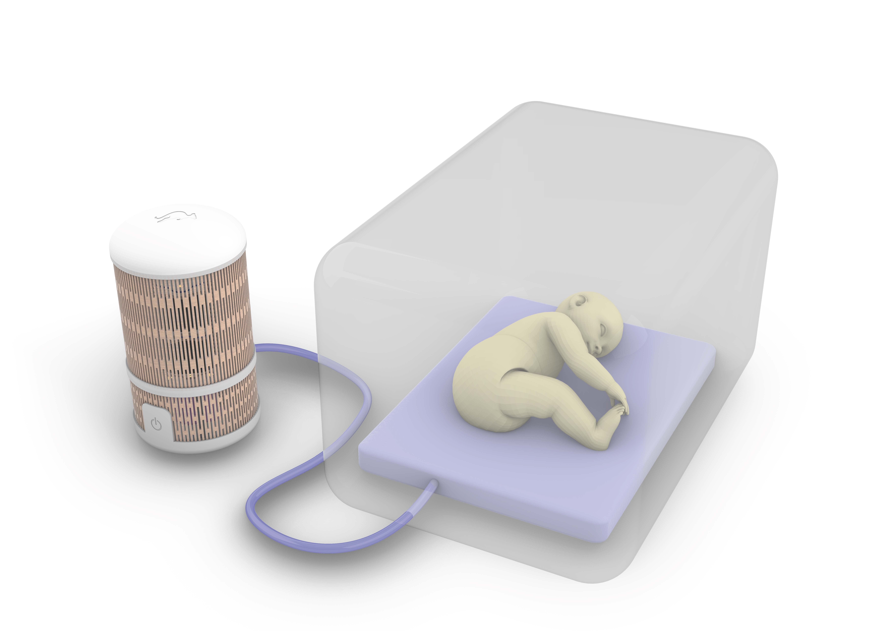

NeoNiu replica la respiració i els batecs dels pares dins la incubadora — sense cap component electrònic prop del nadó.

Cada any, uns 13 milions de nadons neixen prematurs al món. A Espanya, la prematuritat afecta el 6,1% dels naixements (19.495 casos el 2024, INE). Aquests nadons necessiten incubadora, separats dels seus pares en el moment més crític del seu desenvolupament.
El mètode cangur —contacte pell amb pell del nadó amb els progenitors— millora la termorregulació, la freqüència cardíaca, el son i el vincle emocional. El problema: No sempre és possible mantenir el contacte físic.
NeoNiu replica els estímuls biomimètics —moviment respiratori i sons parentals— dins la incubadora, sense separar el nadó de l'entorn clínic controlat i sense cap risc elèctric.
Un circuit tancat d'aire porta el moviment i el so fins al matalàs d'aire dins la incubadora. Cap component electrònic creua la barrera de seguretat neonatal.
NeoNiu neix de l'experiència directa a la UCI neonatal de l'Hospital Vall d'Hebron i avança pas a pas cap a la validació clínica.
La teva opinió ajuda a millorar el NeoNiu. Només 3 preguntes, menys d'un minut.